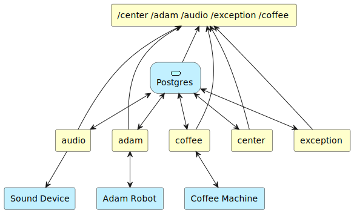
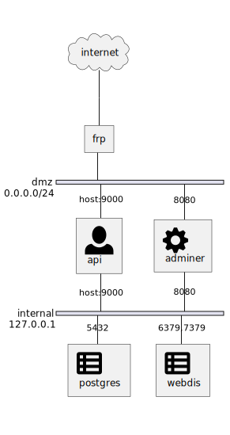

Software Architecture¶
Soft¶
No.1 floor: expose web api, you can see it on http://{adam-pc-ip}:[9000-9005].
No.2 floor: web api implement floor.
No.3 floor: decoupling floor, web api only can query db and use redis publish msg to backend service.
No.4 floor: backend service floor, use supervisor to manage those.
No.5 floor: physical device floor.
Network¶
api: Adam business interface.
frp docker: A fast reverse proxy to help you expose a local server behind a NAT or firewall to the Internet. As of now, it supports TCP and UDP, as well as HTTP and HTTPS protocols, where requests can be forwarded to internal services by domain name.
postgres docker: An object-relational database management system (ORDBMS) with an emphasis on extensibility and standards-compliance.
adminer docker: A full-featured database management tool written in PHP. Conversely to phpMyAdmin, it consist of a single file ready to deploy to the target server. Adminer is available for MySQL, PostgreSQL, SQLite, MS SQL, Oracle, Firebird, SimpleDB, Elasticsearch and MongoDB.
webdis docker: A very simple web server providing an HTTP interface to Redis. It uses hiredis, jansson, libevent, and http-parser.